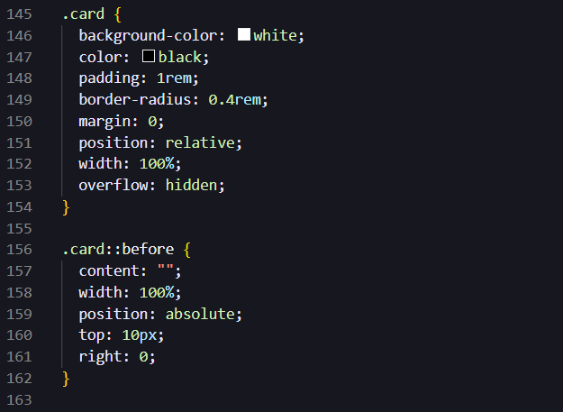
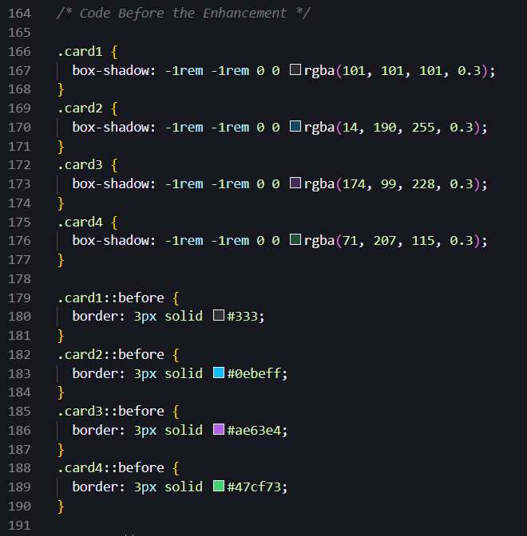
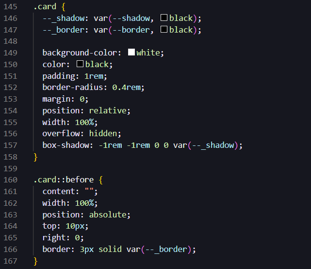
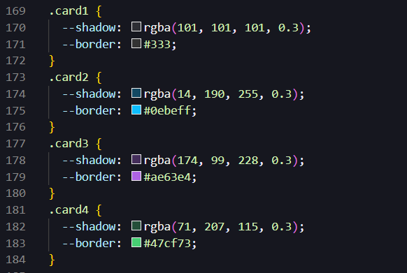

First Enhancement (Click Here)
In the latest iteration of this website's design, I have taken a significant leap forward with the integration of CSS custom properties, a step beyond conventional styling techniques. This advancement is not merely a shift towards modern practices but an embrace of a more dynamic and flexible approach to theming our components.
Efficient Use of Custom Properties:
I've employed custom properties to centralize control over the styling values, allowing for a single point of reference for colors and shadows that are used throughout our card components. This method streamlines the codebase, eliminating the repetitive and tedious task of declaring styles for each card variant. With this system, updates to the theme or style can be made universally and instantaneously, with changes propagating throughout the site, ensuring consistency and coherence.
Introduction of Private Properties:
Delving deeper, I have explored the concept of 'pseudo-private' custom properties by prefixing them with an underscore (--_). This innovative practice implies a private scope, signaling these properties are specific to a component's internal styling. This naming convention draws inspiration from programming languages where private variables are commonplace, thereby importing a similar paradigm into CSS. Such a strategy aids in preventing unintended overrides and encapsulating styles within their respective domains.
Code Implementation and Advantages:
To illustrate, I've declared locally scoped custom properties within each card class. For example, .card1 includes --shadow and --border properties, which are then utilized within a universal .card and .card::before selector. The var(--_shadow) and var(--_border) functions access these properties for each card's box shadow and border, respectively. This approach has the unique advantage that should these properties exist globally, they would defer to the global value; however, in their absence, our local definition takes precedence.
The transformation is evident when comparing the new code with the previous iteration. Before, individual .card1, .card2, etc., and their corresponding ::before pseudo-elements needed separate declarations for each property. Now, a single universal selector controls both the border and the shadow by leveraging these custom properties, significantly reducing the redundancy in CSS.
The benefit of this strategy is multifaceted:
- I've reduced the code footprint, leading to cleaner and more maintainable stylesheets.
- There's a centralized control mechanism for styling, which simplifies theme management.
- It allows for scalability, where new cards can be added with minimal additional styling effort.
Example codes of the Implementatioin:
Code Before
 Code After
 Second Enhancement (Click Here)
I've significantly extended the fundamental HTML and CSS to create an engaging user experience that goes well beyond the basics. I have achieved this through a series of interactive and visual enhancements on the quiz page.
Input Fields Transitions
Starting with the input fields, I've introduced a label animation to indicate focus. This is implemented with CSS rules that set the label to position: absolute; with pointer-events: none;, ensuring that the label does not block clicks intended for the input field. The transition effect, applied to the label, animates smoothly over 0.4 seconds, creating a responsive visual cue when the user interacts with the text boxes.
Submit Button Animation
For the submit button, I have implemented a complex, non-interactive animation that begins as soon as the page loads. Four span tags create an animated border around the button, each moving independently thanks to the nth-child pseudo-class and keyframes animations with different delay intervals. The overflow: hidden; property on the button ensures the animated lines remain contained within the button's boundary. The keyframes animation is designed to loop infinitely, creating a lively effect that draws the eye.